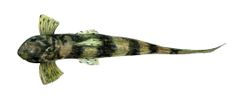
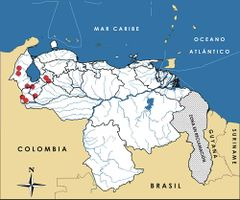

Rineloricaria rupestre
| Paleta andina | |
|---|---|
|  | |
| Riesgo de extinción | |
 Vulnerable (UICN) | |
| Clasificación científica | |
| Reino: | Animalia |
| Filo: | Chordata |
| Clase: | Actinopterygii |
| Orden: | Siluriformes |
| Familia: | Loricariidae |
| Género: | Rineloricaria |
| Especie: | Rineloricaria rupestre |
| Nombre binomial | |
|
Rineloricaria rupestre Schultz, 1944 | |
| Distribución | |
|
 Mapa de distribución de Rineloricaria rupestre | |
Contenido
Taxonomía
Nombres comunes
Paleta andina, Paleta, Paletilla, Aguja paletona, Andean whiptail catfish
Notas taxonómicas
Sinónimos
Descripción
Bagrecito loricárido de tamaño pequeño que apenas supera los 15 cm de longitud estándar. El cuerpo es deprimido, alargado, aguzado hacia la parte caudal y cubierto de placas óseas imbricadas. La cabeza es casi tan ancha como larga. El cuerpo es de color marrón, con cinco bandas negras o marrón oscuro. Presenta un marcado dimorfismo sexual. El macho tiene ornamentos con cerdas en la boca, parte anterior del cuerpo y sobre las aletas pectorales. Se le encuentra adherida por su ventosa bucal a las piedras sumergidas, así como a troncos hundidos. Su dieta está conformada por material vegetal, especialmente algas [1].
Distribución
Especie endémica de los Andes de Venezuela, incluyendo Perijá, entre 150 y 665 m de altitud. En el estado Mérida habita los ríos Chama, Mucujepe y Guayabones al sur del lago de Maracaibo (150 m). En Táchira está descrita para el río Táchira, a la altura de San Antonio; el río Escalante (150 m) y el río Doradas (665 m), afluente del Uribante [1]. En Trujillo se encuentra en el río Motatán en Las Palmeras (650 m), en Miraflores (800 m) y en los ríos San Pedro y San Juan [1]. En Zulia se le reporta para el río Tukuko (200 m), afluente del río Santa Ana, y para el río Apón, cerca de Sirapta (250 m). En Barinas se ha registrado en el río Caparo (120 m) y en el río Boconó (200 m). Es de hábitos bentónicos en ríos y arroyos de fuerte corriente, con aguas de temperatura entre 16 ºC a 26 ºC, ocasionalmente cristalinas y muy oxigenadas, pero que corrientemente arrastran sedimentos.
Situación
'Lista Roja Venezuela' Vulnerable B1ab(iii)
'Lista Roja internacional' No Evaluado
No se han realizado estudios sobre su ecología poblacional. Es de hacer notar que una colecta de esta especie, llevada a cabo en el río Escalante, se realizó durante una gran mortandad íctica que ocurrió en este río a consecuencia de derrames de pesticidas, fenómeno conocido como el “Ecocidio del Escalante” [4]. Se le considera Vulnerable ya que la especie tiene un tamaño poblacional pequeño, es muy escasa en las colectas y experimenta una fuerte intervención de su hábitat.
Amenazas
Los cambios ambientales que modifican la calidad de las aguas y suelos, tanto altoandinos como del piedemonte, tienen un fuerte impacto sobre las poblaciones de este tipo de especies. En los ambientes andinos se ha desarrollado desde hace varias décadas una gran actividad agrícola (cereales, caña de azúcar, tubérculos, frutas, hortalizas, algodón, plátano, café, cacao, tabaco), pecuaria (ganado bovino, porcino, caprino, ovino y aves), industrial (manufacturas) y minera (cobre, pirita y yeso). Esto ha traído consigo la deforestación, intervención, alteración y contaminación de los cursos de agua. Adicionalmente, en las cuencas de los ríos andinos se han introducido especies exóticas como la trucha arcoiris, cuyo efecto sobre las poblaciones de esta especie en particular aún no ha sido evaluado. Debido a su distribución restringida y tamaño pequeño carece de importancia económica, aunque tiene potencial para la acuariofilia [2,3].
Conservación
No existen regulaciones específicas para la especie. Es muy probable su presencia en varias de las áreas protegidas de la cordillera andina y de la sierra de Perijá, aunque este aspecto no ha sido estudiado y se desconoce su efectividad para la protección de Rineloricaria rupestre. Se sugiere realizar estudios sobre la biología y ecología de esta especie, a objeto de estimar sus verdaderos tamaños poblacionales y su correspondiente estatus de conservación. Muy especialmente se recomienda evaluar y fomentar la recuperación de la calidad de las aguas de los ríos andinos.
Editores y Colaboradores
Jaime E. Péfaur